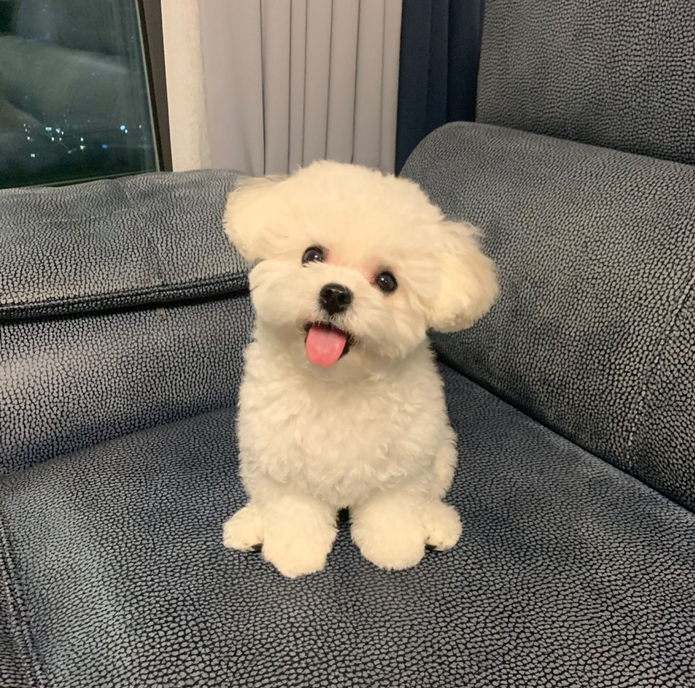
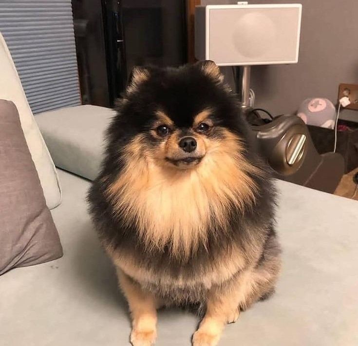
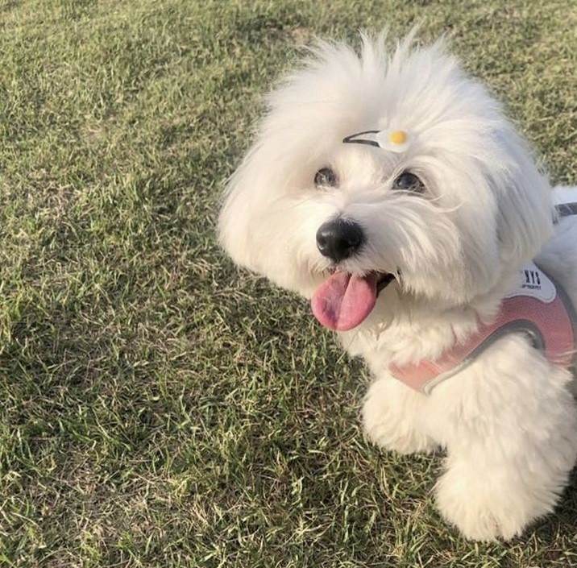

Maltese |
Pomeranian |
Coton De Tulear |
|  |  |  |
| These dog breeds are gentle, intelligent, and affectionate. They are family dogs and are very trusting. They are playful and lively; they love to learn new tricks. Maltese are generally small dogs, which makes them the perfect indoor pet. They have a beautiful coat of fur that requires high maintenance. You can often see this dog breed to have long fur, often reaching the floor, that are styled, and that is most likely why they were considered the "aristorcrat of the dog world". | Pomeranians are small dogs, some may consider them as purse dogs, but they are very courageous. They are hyper and perky animals, and you will often see them playing around; they require frequent exercise. Though these dogs are small, you can see them tackling larger dog breeds, as if they are the same size, and they bark really loud. With this, they can be small alert dogs, which is useful. Their coat is high maintainance. They need to be properly groomed and they also shed. | Coton de Tulear dogs are bright and affectionate creatures. They are great family dogs, they love playing with children, and are very patient too. From the name itself, they have long, fluffy, white coats, much like cotton, which needs high maintenance. Coton de Tulears are also hypoallergenic. They do not shed their fur, which makes it suitable for people with allergies to take care of them. Some Coton de Tulear dogs also loves to get their hair styled with pins. |
SOURCES:
"Maltese Dog Breed Information and Personality Traits" (n.d.). Retrieved from https://www.hillspet.com/dog-care/dog-breeds/maltese
Koreaboo (2020, May 21). "For SEVENTEEN’s Pets, It’s Anything But a Dog’s Life!". Retrieved from https://www.koreaboo.com/stories/seventeen-pets-dogs/
coton de teular
Braaksma, H. & Guthrie, C. (2021, November 30). "Coton de Tulear". Retrieved from https://www.dailypaws.com/dogs-puppies/dog-breeds/coton-de-tulear
https://www.pinterest.ph/pin/703756184556814/
"Pomeranian Dog Breed Information and Personality Traits" (n.d.). Retrieved from https://www.hillspet.com/dog-care/dog-breeds/pomeranian
https://www.pinterest.ph/pin/779404279253073142/